从金十快讯到当天日报 PDF，十分钟上手
在金十页面右键把快讯存进团队素材库，AI 自动分栏目、打分，你在选稿网页里挑选、调整、预览，最后一键导出和模板一模一样的日报 PDF。
Chrome 插件「PLUS Research」
只在 www.jin10.com 上工作，负责右键采集快讯，并同步到团队素材库。
选稿网站 plus.tlines.tech
团队共用的素材库，在这里选稿、修改、预览和生成日报。
安装插件
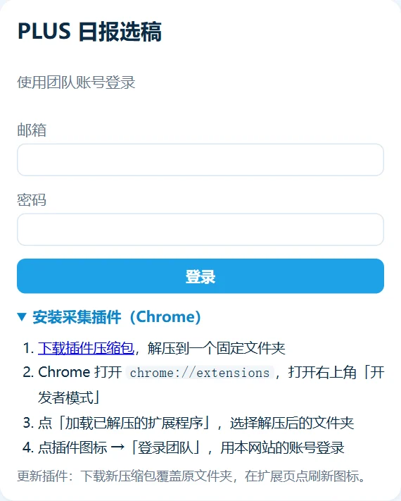
- 打开 plus.tlines.tech，点「安装采集插件（Chrome）」→「下载插件压缩包」。
- 把压缩包解压到一个固定的文件夹。不要放在桌面或下载目录里随手删掉，插件运行时一直需要它。
- Chrome 地址栏输入
chrome://extensions，打开右上角的「开发者模式」。 - 点「加载已解压的扩展程序」，选择刚才解压出来的文件夹。
- 工具栏出现蓝色 P 图标就装好了。建议在拼图形状的扩展菜单里把它固定到工具栏。
chrome://extensions 点插件卡片上的刷新图标，再把已打开的金十页面刷新一下（F5）。
登录团队
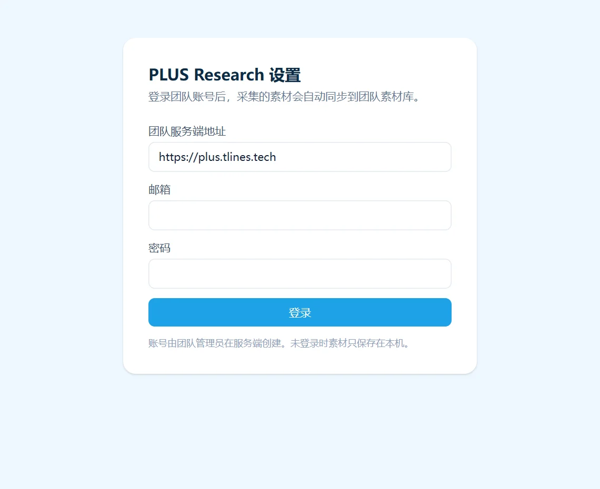
- 点工具栏的插件图标 →「登录团队」，打开设置页。
- 团队服务端地址保持
https://plus.tlines.tech。 - 输入管理员给你的邮箱和密码，点「登录」。
登录成功后，设置页会显示「PLUS 研究组 · 你的名字」。插件只保存登录凭证，不保存密码；凭证 14 天有效，过期后重新登录即可。
没登录也能采集：素材先存在本机，登录后会自动补传到团队素材库。
采集快讯
在金十快讯的正文区域点右键，选「PLUS Research › 加入日报素材库」。
更快的方式：按住 Ctrl 用左键点一下快讯，效果和右键菜单一样；Ctrl+Shift+左键 = 采集并优先 AI 分析（Mac 用 ⌘ 代替 Ctrl）。在快讯上 Ctrl+点击不会再打开新标签页。
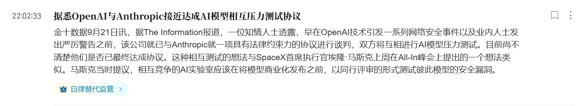
采集时插件会自动完成三件事：
- 读取快讯：标题、正文、发布时间；
- 读取 PLUS 解读：注解弹窗会自己弹开再关闭，约 1.5 秒，这时不要去点它；
- 下载配图原图：快讯配图和解读里的配图。
完成后页面右上角会提示「已加入素材库」。重复采集不会产生重复素材；同事也收藏过的，会显示「N 人收藏」，排序更靠前。
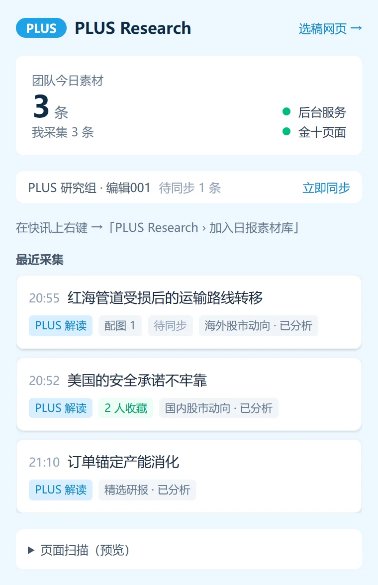
看懂插件弹窗
- 团队今日素材 / 我采集：按北京时间统计。工具栏图标上的数字也是今日素材数。
- 已同步 / 待同步 N 条：采集后约 2 秒、每 5 分钟、打开浏览器时都会自动同步；着急可以点「立即同步」。
- 选稿网页 →：直接打开选稿网站。
选稿
浏览器打开 plus.tlines.tech，用同一个账号登录。
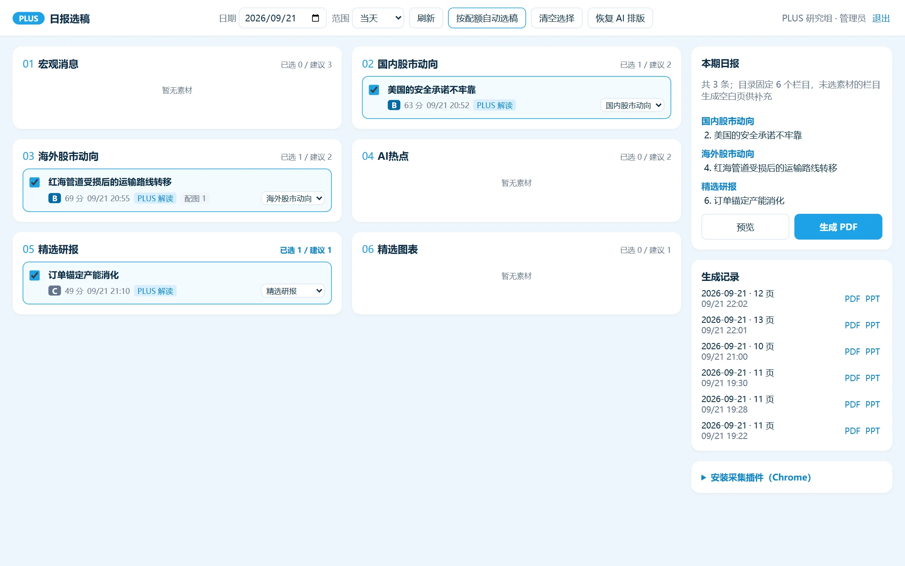
顶栏
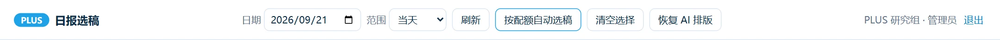
- 日期 / 范围：看哪一天（北京时间）、往前看几天的素材。
- 按配额自动选稿：每个栏目按建议条数取前几条，会覆盖当前的勾选，之后可以再手动增减。
- 恢复 AI 排版：见第 5 步。
看懂一条素材
| 标记 | 含义 |
|---|---|
| S / A / B / C 和分数 | AI 给出的综合分：重要度 60% + 团队热度 20% + 时效 10% + 内容完整度 10%。S ≥ 85，A ≥ 70，B ≥ 50 |
| PLUS 解读 | 已采集到 PLUS 解读 |
| 配图 N | 进入日报的配图数量 |
| N 人收藏 | 多位同事都采集了这条 |
| 已编辑 | 文字或配图被修改过（见第 6 步） |
| 栏目待确认 | AI 对栏目把握不大，建议人工看一眼 |
| AI 分析中 / 失败 | 还没分析完，或分析失败（不影响手动选稿） |
栏目与建议条数
| 栏目 | 建议条数 | 说明 |
|---|---|---|
| 01 宏观消息 | 3 | 央行、利率、通胀、财政、地缘 |
| 02 国内股市动向 | 2 | A 股、港股、国内公司 |
| 03 海外股市动向 | 2 | 美股、欧股、日韩 |
| 04 AI热点 | 2 | 大模型、算力、AI 产业 |
| 05 精选研报 | 1 | 按形式划分，AI 常分错，需要手动拖进来 |
| 06 精选图表 | 1 | 按形式划分，AI 常分错，需要手动拖进来 |
日报的目录固定为这 6 个栏目。没选素材的栏目也会生成一页空白栏目页，方便之后在 PPT 里补充。
勾选结果和排序保存在你自己的浏览器里：同事看不到你的勾选，换一台电脑需要重新选。
排序、换栏目、删除
按住任意素材卡片直接拖动：
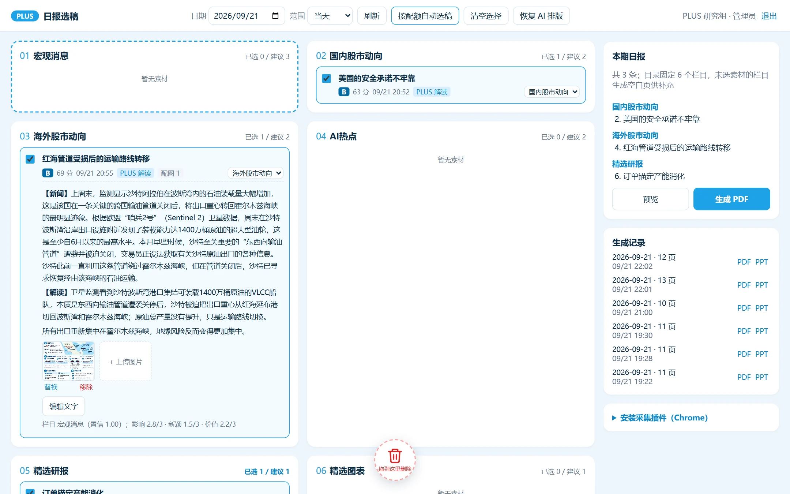
调整顺序
在同一栏目内上下拖。生成日报时按这个顺序排版，「按配额自动选稿」也按这个顺序取。
换栏目
拖到别的栏目（卡片之间或栏目空白处），或者用卡片右下角的栏目下拉框。换过的栏目会锁定，AI 不会再改回去。
删除
拖到底部的垃圾桶（变红时松手），确认后删除。删除后整个团队都看不到这条素材。
恢复 AI 排版
顶栏按钮。撤销所有手动的排序和换栏目，回到 AI 的分类结果；文字和配图的修改会保留。
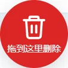
修改文字与配图
点素材标题展开卡片，可以看到完整的【新闻】【解读】和配图。
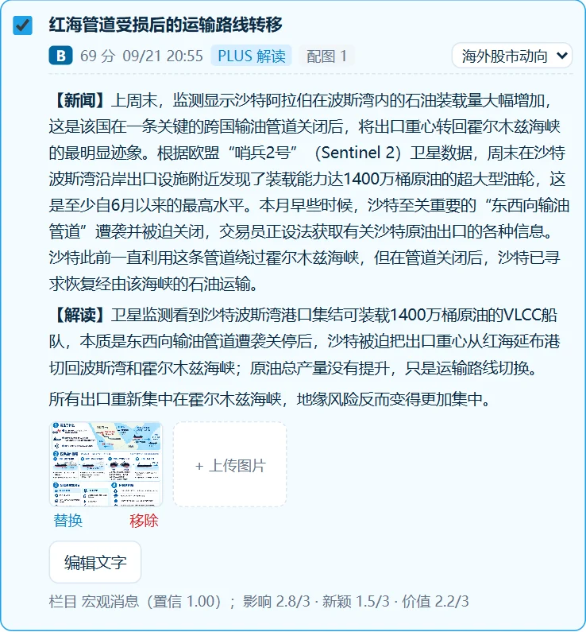
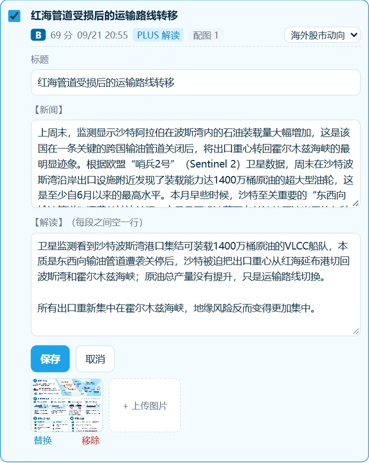
- 改标题：点标题右边的 ✎，直接改，回车保存（Esc 取消）；改回原标题即恢复原样。
- 改文字：「编辑文字」→ 修改 →「保存」。卡片上会出现「已编辑」标记，日报里用修改后的文字。
- 换图 / 加图：每张图下面有「替换」「移除」，最后一格「+ 上传图片」可以从电脑选一张图加进来。每条素材最多放 2 张图进日报。
- 恢复原文：编辑过的素材会出现「恢复原文」，一键撤销这条的所有文字和配图修改。
预览与生成
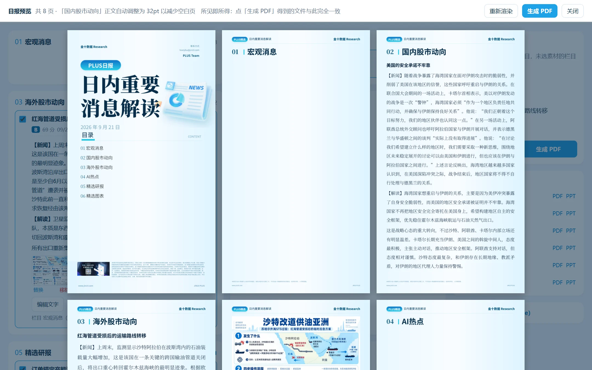
- 勾选好素材后，点右侧的「预览」，大约 15～20 秒后显示所有页面。
- 发现问题就关掉预览，回去修改文字、配图或顺序，再点「重新渲染」。
- 满意后点「生成 PDF」，完成后自动下载，文件名如
PLUS日报-2026-09-21.pdf。
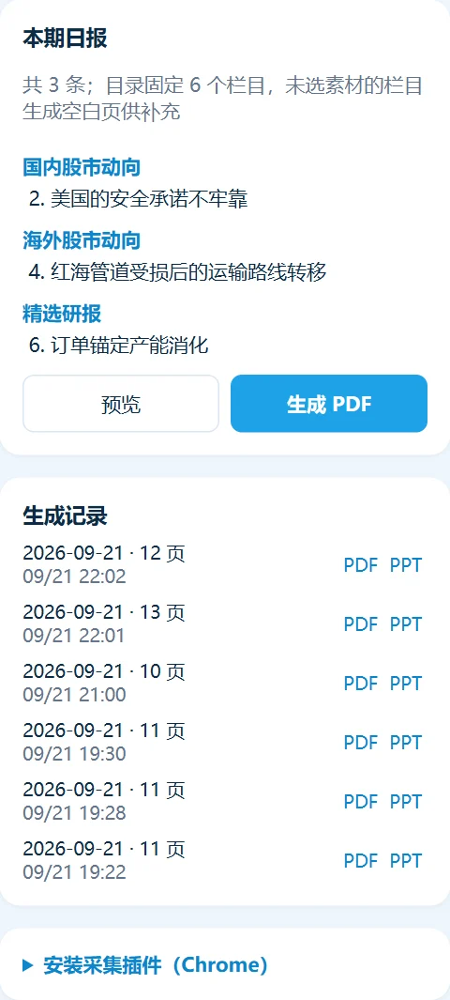
生成之后
- 生成记录里保留最近 10 次，随时可以重新下载 PDF 或 PPT。
- 需要在 PowerPoint 里再加工，就下载 PPT；PPT 和 PDF 内容一致。
- 版面自动适配字数：内容多会自动续页、按句拆分，必要时栏目字号从 36pt 缩到 34 / 32pt，保证手机上也能看清。
- 只读账号可以预览，但不能生成日报。
遇到问题先看这里
| 现象 | 原因与处理 |
|---|---|
| 右键看不到菜单，或点了没反应 | 插件刚安装或更新过，刷新金十页面（F5） |
| 提示「未识别到新闻组件」 | 右键的位置不在快讯上，请对准快讯正文再右键 |
| Ctrl+点击没反应 | 插件刚安装或更新过，刷新金十页面（F5） |
| 提示「PLUS 解读需要登录会员账号」 | 你的金十账号不是 PLUS 会员。素材照样采集，只是没有解读，可以在选稿页手动补写 |
| 素材带「VIP 锁定」 | 这条是 VIP 快讯，正文不完整，需要人工补充 |
| 采集了但同事看不到 | 看插件弹窗：显示「已同步」才算上传成功；显示「待同步 / 同步失败」就点「立即同步」 |
| 插件登录一直转圈或提示超时 | 去 chrome://extensions 刷新插件后重试；仍不行就重新下载安装最新版插件 |
| 素材在「待分类」里、没有分数 | AI 还没分析完或分析失败（比如 AI 额度用完）。不影响使用，用下拉框或拖动给它指定栏目即可 |
| 「按配额自动选稿」没选到想要的 | 它只按当前排序取每个栏目的前几条，不会动「待分类」；手动补选即可 |
| 网页没出现新功能 | 按 Ctrl + F5 强制刷新一次 |
| 插件自动退出登录 | 登录凭证 14 天过期，重新登录即可 |
给管理员
新增账号、重置密码在服务器上执行（密码会要求交互输入，至少 8 位）：
cd ~/plus
docker compose exec api python -m app.cli create-user --team "PLUS 研究组" \
--email 005@jin10-inc.com --name 编辑005 --role editor
docker compose exec api python -m app.cli reset-password --email 005@jin10-inc.com
docker compose exec api python -m app.cli list-users- 角色：
admin/editor可以采集、编辑和生成；viewer只能查看和预览。 - 更新系统：在本机仓库根目录运行
bash deploy/deploy.sh，会同时更新网站和插件下载包。 - 备份：服务器上的数据卷
plus_pgdata（数据库）和plus_storage（图片与生成的日报）。 - AI 分类由 TypeSafe JEV 提供，Key 配置在服务器
.env的PLUS_JEV_API_KEY。额度用完不影响人工选稿和生成。